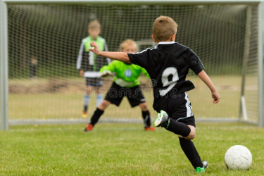
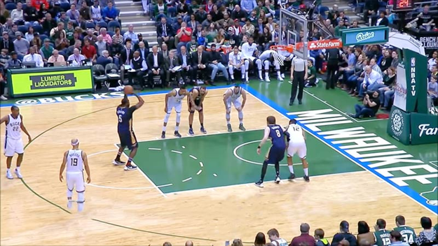
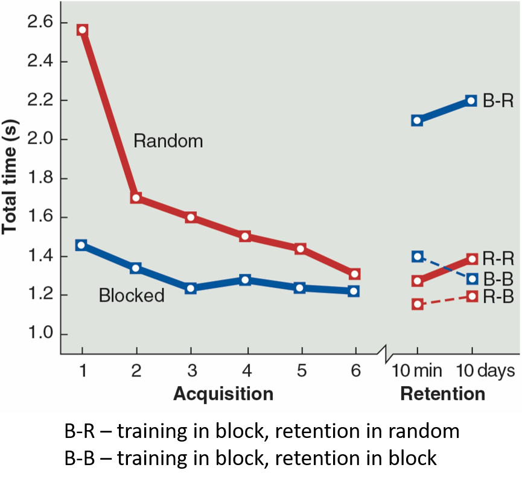

Variability of Practice
The messier, more mixed-up practice often feels worse — and teaches more. Here’s why.
By the end of this lesson you will be able to…
- 1Define practice variability and distinguish constant from variable practice.
- 2Distinguish blocked, random, and serial practice schedules.
- 3Explain the contextual interference effect and the hypotheses behind it.
- 4Name the factors that change when variable practice helps.
What is practice variability?
Practice variability is the variety of movement and context characteristics a learner experiences while practicing a skill.
This has nothing to do with the performance variability (standard deviation, variable error) from the measurement lesson. That was about how inconsistent a performance was. This is a deliberate choice about how much to vary what you practice.
What can we vary?
Variations of a similar movement that the test might demand.
- Overarm, three-quarter, and side throws
- A transfer to different heights or surfaces
The physical environment the skill happens in.
- Shooting from different distances or angles
- With or without a defender or obstacle
This maps onto regulatory conditions from early in the semester. Varying the features that regulate the movement (distance, angle, a defender) is what builds adaptable skill — varying non-regulatory features (crowd noise, room temperature) matters far less.
Constant vs. variable practice
Take one skill — say, a soccer free kick. How you organize its practice falls on a spectrum:

One variation, repeated
All acquisition trials on a single version of the skill — e.g., free kicks always from the same distance and setup.
Several variations
Trials across three or more variations — free kicks from different distances, angles, and game situations.
This constant/variable choice is about variability within a single skill.
Variable practice: worse now, better later
Research in motor control and learning shows that variable practice typically produces a two-sided result. Select each to reveal it:
Just like distributed practice and the desirable-difficulties idea: what makes practice feel harder and look worse in the moment is often exactly what builds durable, adaptable learning.
Free-throw shooting: constant vs. variable
Schoenfelt et al. (2002) had people practice basketball free throws, 4 days a week for 3 weeks (40 shots per session), with a retention test 2 weeks later — taken from the free-throw line. The groups differed in where they practiced from:

- CConstant: always from the free-throw line.
- VVariable: several conditions that mixed in other spots — in front of, behind, and around the line — often practicing the exact line only rarely.
The retention test is from the line. The constant group practiced exactly that; the variable groups mostly didn’t. Who do you predict improved more at the free throw?
Make a prediction to continue.
Shoenfelt, E. L., Snyder, L. A., Maue, A. E., McDowell, C. P., & Woolard, C. D. (2002). Comparison of constant and variable practice conditions on free-throw shooting. Perceptual and Motor Skills, 94(3), 1113–1123.
The variable group won
Even though the variable groups rarely practiced from the exact free-throw line, they improved more than the group that practiced only from the line. Varying the practice beat rehearsing the exact target skill.
Pre- to post-test improvement by condition. All three variable conditions beat constant practice — and the biggest gain came from the combination that mixed several positions including the free-throw line.
Data from Shoenfelt et al. (2002). C = Constant; F&B = Front & Back; Combo = Combination (included the free-throw line); Random = shots from around the key.
What can you vary within a skill?
Not every variation is worth practicing. Recall Gentile’s taxonomy from early in the semester — the distinction between regulatory and non-regulatory conditions tells you which features actually matter.
Take basketball shooting in a game:
Features that shape the movement itself — varying these builds adaptable skill.
- Distance from the basket
- Defensive players
- Situation / time on the clock
- Angle to the hoop
- Type of shot
Features that don’t shape the movement — varying these adds little.
- Crowd noise
- Presence of spectators
- Temperature of the gym
Blocked, random, and serial schedules
Now zoom out from one skill to a session with several skills. Say you’re coaching soccer and want to work on four skills: corner kick, free kick, penalty kick, and near passing. The order you practice them in is itself a powerful variable.
Select each schedule to see how the same practice trials get arranged:
See how the trials are ordered
Each schedule uses the same number of trials per skill — only the order changes.
Explore all three to continue.
Blocked vs. random: which learns better?
Shea & Morgan (1979) is the classic study here. Participants learned three different rapid arm-movement patterns (A, B, C): on a signal, each one required knocking down a specific sequence of small hinged barriers as fast as possible — a different order of movements for each task. The measure was total movement time. Same total trials, arranged either way:
- BBlocked: AAAA BBBB CCCC
- RRandom: A B C C B A A C B C A B
They were tested on retention and transfer, 10 minutes and 10 days later. Which schedule do you predict produced better learning?
Make a prediction to continue.
Shea, J. B., & Morgan, R. L. (1979). Contextual interference effects on the acquisition, retention, and transfer of a motor skill. Journal of Experimental Psychology: Human Learning and Memory, 5(2), 179–187.
Random practiced worse — but learned more
During practice (acquisition), the blocked group performed better — faster times. But on the retention tests, the random group won — the flipped result you’ve now seen again and again.

Acquisition (left): the random group is slower — worse during practice — but closing the gap fast. Retention (right): the labels show training-then-test conditions. Performers who trained in a blocked schedule but were tested under random conditions (B-R) did worst — their practice hadn’t prepared them to switch. Random practice built the more durable, flexible skill.
Shea, J. B., & Morgan, R. L. (1979). Contextual interference effects on the acquisition, retention, and transfer of a motor skill. Journal of Experimental Psychology: Human Learning and Memory, 5(2), 179–187.
Contextual interference
Contextual interference is the interference created when you switch among several similar-but-different skills during practice. Blocked practice keeps it low; random practice makes it high.
Low interference (blocked) → better practice performance. High interference (random) → better learning and retention.
This is the counterintuitive heart of the lesson: the very interference that makes random practice feel harder and look worse in the moment is what drives the deeper learning. The struggle isn’t a side effect — it’s the mechanism.
Drilling one skill until it’s smooth (blocked) feels satisfying and looks like progress. But mixing skills the way real life demands them — the harder, messier session — is usually what transfers to the world outside the clinic or gym.
How much interference?
The three schedules line up along a contextual-interference continuum — from the easiest-feeling to the hardest-feeling practice:
Blocked
Easiest during practice, weakest learning.
Serial
Predictable cycle — moderate interference.
Random
Hardest during practice, strongest learning.
Serial practice produces results similar to random (Lee & Magill, 1983). Blocked, serial, and random are all types of variable scheduling — they just sit at different points on the interference continuum.
Higher contextual interference during practice — more switching among skills — makes practice feel harder and look worse, but it improves long-term retention and transfer of the skill.
This is the single most important idea from this half of the lesson. A blocked schedule flatters you with smooth practice; a random schedule frustrates you — and then pays you back at the retention test, when it counts.
If you want a skill to last and to hold up in new situations, build some interference into practice. Comfort during practice is not the goal — durable, adaptable skill is.
Why does interference help?
Two hypotheses explain the contextual interference effect. Select each to explore it.
Both hypotheses describe a desirable difficulty: making practice more effortful in the moment — through comparison or through forced rebuilding — is exactly what deepens the learning.
When does variable practice help?
The contextual interference effect is real but not universal. It depends on matching the challenge to the learner. Select each factor:
It’s all about the optimal challenge point: raise difficulty enough to engage the learner, but not so much that they’re overwhelmed. That balance shifts with the skill and the person.
An OT is helping a novice patient relearn several distinct hand skills after injury. The patient finds even one skill cognitively demanding right now. Based on the factors we covered, what’s the best starting schedule?
Answer to continue.
What you can now do
- 1Define practice variability and distinguish constant from variable practice.
- 2Tell blocked, serial, and random schedules apart on the interference continuum.
- 3Explain the contextual interference effect — and the elaboration and forgetting–reconstruction hypotheses.
- 4Adjust the schedule to the skill and the learner using the optimal challenge point.
You’ve covered how to space and how to vary practice. The last scheduling question: when should you practice a skill whole, and when should you break it into parts?
Return to Canvas for the final lesson in this set, Whole vs. Part Practice.